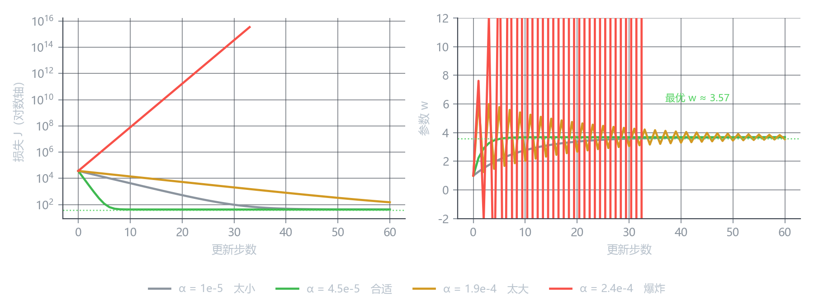

学习率
唯一需要你手动调的旋钮
梯度给了方向，\alpha 给了步长。方向不用管——数学已经保证了负梯度是最陡下坡；但走多大一步，得你决定。
w \leftarrow w - \alpha\frac{\partial J}{\partial w}, \qquad b \leftarrow b - \alpha\frac{\partial J}{\partial b}
\alpha 不是模型学出来的，是你写死在代码里的一个数。它叫超参数（hyperparameter）——和参数 w, b 的区别就在这：参数是学出来的，超参数是你定的。
太大的时候会发生什么
步子太大，一脚跨过谷底，落到对面更高的坡上。到了对面，梯度指向另一边，你又跨回来，而且比上次更远。

图上红色那条（\alpha = 2.4 \times 10^{-4}）：损失不是下降，是指数级上升，右图里 w 在正负之间疯狂震荡、幅度越来越大。
跑几万步之后，数值会超出浮点数范围，变成：
loss = nannan 先怀疑学习率
NaN（not a number）是数值溢出后的结果。训练中出现，第一个要查的就是学习率是不是太大了。
第二个要查的才是数据里有异常值（比如面积填了 10000 这种）。
太小的时候会发生什么
步子太小，每一步都只挪一点点。
灰色那条（\alpha = 10^{-5}）：60 步之后损失还在 10^4 量级，离谷底 40 差了三个数量级。同样跑到 2000 步，它能收敛——但代价是时间。
| 学习率 | 到谷底需要 | 代价 |
|---|---|---|
| 10^{-5} | 几千步 | 慢，但稳 |
| 4.5\times10^{-5} | 约 10 步 | 快 |
现实里，一次训练等不起几千倍的时间。“太小”不会报错，只会让你以为模型不行。
四种表现对照
| \alpha | 损失曲线 | 参数轨迹 | 结论 |
|---|---|---|---|
| 10^{-5} | 缓慢下滑 | 平滑逼近 | 太慢 |
| 4.5\times10^{-5} | 几步内陡降到底 | 平滑逼近 | 合适 |
| 1.9\times10^{-4} | 先降后再抖 | 来回振荡后收敛 | 偏大，能忍 |
| 2.4\times10^{-4} | 一路上冲 | 震荡且放大 | 爆炸 |
注意第三行：\alpha = 1.9\times10^{-4} 时损失还在下降，只是参数在谷底附近左右弹跳。这种”能用但不好看”的状态最容易被忽略——它比合适值慢得多。
一步一步走到谷底
用我们的数据，\alpha = 4.5\times10^{-5}，从 w = 1.0、b = 0 出发，学习率全程不变：
| 步 | w | b | 损失 J | 当前的 \partial J/\partial w |
|---|---|---|---|---|
| 0 | 1.0000 | 0.00000 | 37007.88 | −27562 |
| 1 | 2.2403 | 0.01181 | 10724.14 | −14816 |
| 2 | 2.9070 | 0.01817 | 3128.88 | −7965 |
| 3 | 3.2655 | 0.02161 | 934.07 | −4282 |
| 4 | 3.4581 | 0.02348 | 299.83 | −2302 |
| 5 | 3.5617 | 0.02450 | 116.55 | −1237 |
| 6 | 3.6174 | 0.02506 | 63.59 | −665 |
| 7 | 3.6473 | 0.02539 | 48.29 | −358 |
| 8 | 3.6634 | 0.02558 | 43.86 | −192 |
| 9 | 3.6720 | 0.02570 | 42.59 | −103 |
| 10 | 3.6767 | 0.02578 | 42.22 | −103 |
十步，损失从三万七掉到 42。 但真实最低点是 37.27——还差一截，原因见最后那段。
看每一行发生了什么：
- 梯度在变小：−27562 → −14816 → −7965 … 每步约剩三分之一。这是在告诉我们”离谷底越来越近了”。
- 步子跟着变小：w 第一次跳了 1.24，第十次只挪了 0.005。\alpha 没变，是梯度自己小了。
- 损失下降也在变慢：前两步就干掉了 90%，后面全是细调。
不是每一步都掉一大截。真正的曲线是：开头猛，后面磨。
如果你看到的是一条匀速下降的直线，通常说明还没进入收敛区，或者学习率小得离谱。
一个必须注意的现象：b 几乎没动
十步下来，w 从 1.0 走到 3.68（涨了 2.68），而 b 从 0 走到 0.0258（涨了 0.026）——差一百倍。
真实最优的 b 在 20 左右。也就是说：w 早就到位了，b 还在原地爬。
原因在梯度大小：
| 参数 | 梯度公式 | 数量级 |
|---|---|---|
| \dfrac{\partial J}{\partial w} | \frac{1}{m}\sum(\hat{y}-y)\cdot x | 乘了面积（几十到一百多），大 |
| \dfrac{\partial J}{\partial b} | \frac{1}{m}\sum(\hat{y}-y) | 没乘，只剩残差本身，小 |
同一个 \alpha，梯度大的参数走得飞快，梯度小的走不动。
面积是”几十到一百多”，截距是”个位数”。量纲差一百倍，梯度就差一百倍。
解决办法不是给 b 单独配一个 \alpha——那只是打补丁。正解是把特征缩放到同一量级，让梯度自然同尺度。这是第 3 章的事。
那到底怎么选
没有公式能一次算对，但有可靠做法。
一、从常用值起步
| 场景 | 起步值 |
|---|---|
| 小数据、手写模型 | 10^{-2} 到 10^{-3} |
| 一般神经网络 | 10^{-3} 到 10^{-4} |
| 微调预训练模型 | 10^{-5} 到 10^{-6} |
二、看损失曲线的形状，不看最终值
| 你看到的 | 判断 |
|---|---|
| 前几步掉到底然后平 | 合适，或略偏大 |
| 平稳缓慢下降 | 偏小，可放大 3–10 倍 |
| 上下抖、锯齿状 | 偏大 |
一路上升、迟早 nan |
太大 |
三、先粗后细
按 10 倍或 3 倍的间隔试（10^{-3}, 3\times10^{-4}, 10^{-4}…），找到”不抖且下降快”的那个，再在附近细调。
进阶：它不一定要固定
上面全程用的是固定值。实际训练更常见的是让它随时间变小：
- 前期大步走，快速接近谷底
- 后期小步磨，避免在谷底附近来回跳
这叫学习率调度（learning rate schedule），常见的有阶梯衰减、余弦退火、预热。先知道有这回事，第 16 章讲训练技巧时再展开。
核心概念
| 概念 | 内容 |
|---|---|
| 学习率 \alpha | 每次更新的步长，是超参数，不是学出来的 |
| 太大 | 跨过谷底 → 震荡 → 数值爆炸 |
| 太小 | 不报错，但慢到没有实用价值 |
| 合适 | 几十步内损失降几个数量级 |
| 步长自适应 | 梯度随接近谷底而变小，步长自动变小 |
| 与特征尺度绑定 | 量纲不同 → 梯度量级不同 → 同一 \alpha 效果天差地别 |
| 判断方法 | 看曲线形状：抖=大，慢=小 |
| 调度 | 前期大后期小，比固定值更常用 |